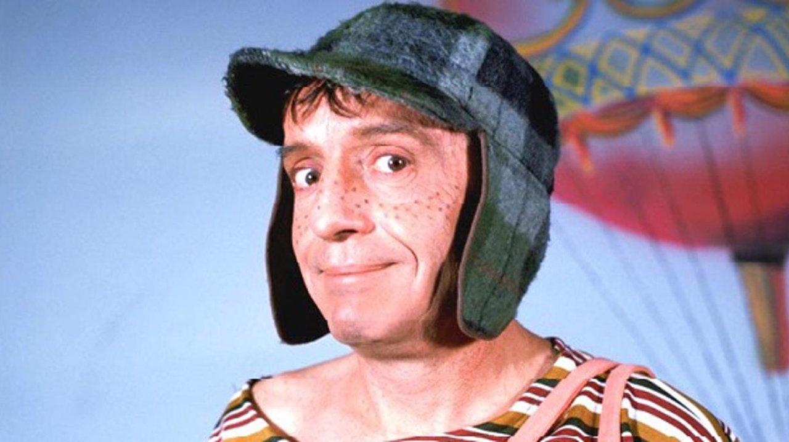

| Personagem | Breve descrição | Relação com Chaves |
|---|---|---|
| Seu Madruga | Morador da casa 72, conhecido por dever 14 meses de aluguel. | Bate nele quando perde a paciência, mas têm uma certa relação de fidelidade. |
| Chiquinha | Filha do Seu Madruga e orfã de mãe. | É amiga de Chaves, apesar de também brigar com ele. |
| Seu Barriga | O dono da vila. | Quase sempre, quando chega na vila é alvo das atrapalhadas de Chaves, levando vassourando e sendo derrubado, por exemplo. Por isso, estressa muito com Chaves. |
| Quico | O filho da Dona Florinda, moradora da casa 14. | Quico brica com Chaves, mas Quico se mostra superior, com brinquedos melhores, e exibe-os para Chaves. Chaves tenta bater em Quico às vezes. |